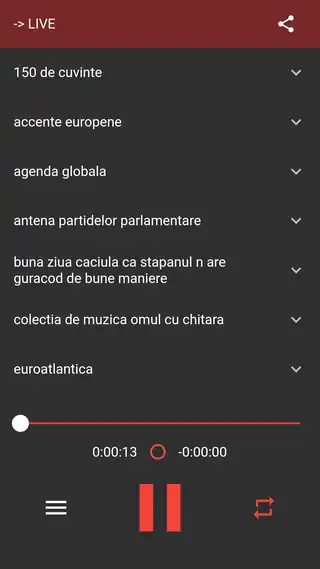
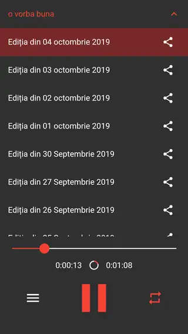

Radio Romania
صوت وفيديو وموسيقى
Play the latest podcasts from Radio Romania stations. Alternatively, it can also play the radio tstations live. Web version: https://radio-romania.pav3l.synology.me/web Full archive: https://radio-romania.pav3l.synology.me Bugs & suggestions in Telegram: https://t.me/appradioromania NonFreeNet: We c
✓ ترخيص مفتوح (GPL-3.0-or-later) · آخر تحديث: 2024-10-17
2.5.7الإصدار
21.6 MBالحجم
GPL-3.0-or-laterالرخصة
Open in Kanzتحميل APK (21.6 MB)
Download APK
SHA-256: c1a6c7ffea2a4c2e8f6114ec603e9bb0faa8c1468164bea1e05e509f152d39b4


امسح الكود لفتح صفحة التطبيق
Scan to open this app page
لو كنز مش متثبت عندك: نزّل متجر كنز.
Not installed? Get the Kanz store.